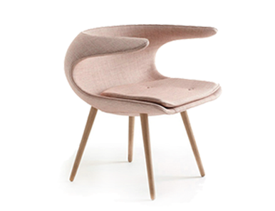

{include file="./templates/jiaju/header.html"}
公司介绍
COMPANY INTRODUCTION
{Dz:newsinfo nid="24"}
{$info.content}
查看详情
{/Dz:newsinfo}
Collect from
网页模板
MORE > >

MORE > >
{Dz:nlist limit="3" name='vo' status='true' cateid='3' }
{$vo.title}
{$vo.abstract}
{/Dz:nlist}
卧室如何选择合适的衣橱家具色彩
要选择合适的家具色彩，首先要符合个人爱好，又要 注意与房间的大小、室内光线的明暗相结合，并且要
韩派办公家具制作工艺过程
苏州韩派办公家具制作工艺过程，品牌办公家具厂家 都具有一整套生产流程，通过对工艺流程的规范以及
韩派办公家具制作工艺过程
苏州韩派办公家具制作工艺过程，品牌办公家具厂家 都具有一整套生产流程，通过对工艺流程的规范以及
韩派办公家具制作工艺过程
苏州韩派办公家具制作工艺过程，品牌办公家具厂家 都具有一整套生产流程，通过对工艺流程的规范以及
{include file="./templates/jiaju/footer.html"}